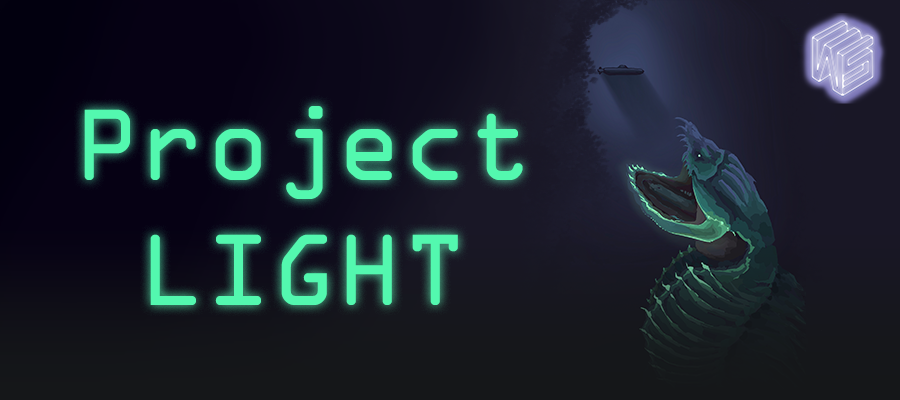
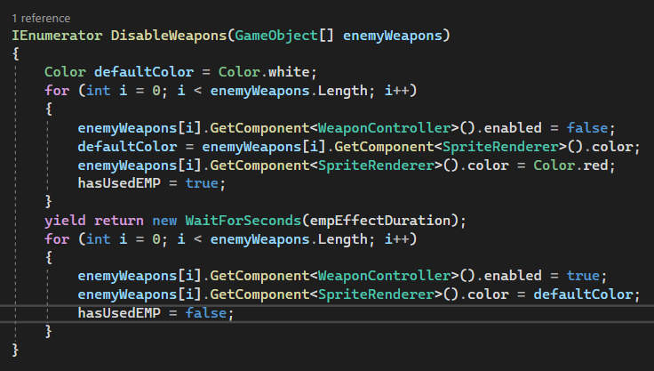

Pre-Beta 2 Sprint
Oct 31st, 2022 to Nov 13th, 2022 - More systems implementations and Bugs Fix

For this sprint, my primary tasks were to implement new systems to provide more interesting choices to a player. These new systems are Sonar Shields and EMP Systems. The functionality parts of these new systems are now in the game and since I was the one who created the entire architecture of how the ship system is structured, creating a new system was pretty straightforward. Although there needs to be more play-testings and polish required as we are still using temporary art assets.
Programming and Development (15 hours)
My major task for this sprint was to implement Sonar Shield and EMP systems into the game. The sonar shield once installed in the player ship will protect from the enemy's sonar projectiles. In addition to that, the sonar shield will grant the player additional evasiveness and has a small chance of reversing the enemy's attack priority whenever the enemy attacks. On the other hand, the EMP system once installed, provides an active skill that the player can activate anytime during the gameplay that will disable the enemy's weapons for a short period. This was inspired by our study case, FTL's cloaking system which increases the evasiveness of the player's ship significantly. But our EMP systems simply disable the enemy's weapons for a short period. Due to this powerful skill, the EMP system has a very long time cooldown and any slight damage to a room with an EMP system installed will deactivate the EMP system.
Sonar Shield
A sonar shield prevents sonar projectiles from enemies. This means that I need to make sure that it only blocks the sonar projectiles, not the weapon projectiles. This might put a player to be in a disadvantage because the maximum shield the player can install is two and if one of them is a sonar shield, technically the player only has one shield to protect their ship against the enemy's weapon projectiles. To compensate for this, we incremented the maximum # of shields the player can install to 3. To be exact, 2 regular shields and an additional special shield. So hopefully, this would allow players to install special shields along with regular shields.
Additionally, I have already mentioned above that the sonar shield also provides hidden stat boosts to a player that will increases the survivability of the player:
- 1. Grants additional 5% evasiveness to the player's ship.
- 2. Has a 10% chance of reversing the enemy's attack priority whenever an enemy attacks.
However, because this is a hidden feature, players need to figure out this by themselves.
Since I was the one who created the architecture of the ship system and spent much time integrating shield functionality, the Development process of implementing a new variation of the existing system has gone relatively smoothly.
Below is a short demonstration of a sonar shield when installed:
As you can see from the demo, the sonar shield (a shield with turquoise color) prevents the enemy's sonar projectiles (wifi looking thing) but it does not block the enemy's other projectiles such as torpedoes thus near the end of the demo, the weapon projectile passes through a sonar shield and gets blocked by a regular shield.
EMP System
The additional system that I had to create was EMP System which disable all enemy weapons once activated. This system is a system that needs to be installed in one of the rooms like other systems but it does not need to be manned to be activated. When activated, it will disable the enemy's weapons for 2 seconds. Due to the powerful advantages it provides, it has a very long cooldown time (70 seconds) and even tiny damage to the room that this system is installed will cause this feature to be unavailable.
For the development side, because this is a new system and not a variation of existing systems, the development time took longer than I expected, however, I still managed to get it working. But as I said above, a lot of play-testings are required to make sure that they function as expected. And these should be the main tasks for we, programmers should tackle in the next and the last sprint.
Here is the screenshot of the code snippet of the EMP system's disabling weapons function using a simple IEnumerator:

And here is the short demo of using an EMP system:
For the demonstration purpose, I've extended the duration of disabling time to 10 seconds but in the actual game, it will be reduced to around 2 seconds. When the emp is activated, all enemy's weapons turn red and they cannot be fired. The enemy was able to fire the sonar projectile during the demo but sonar and weapons are two different systems. Thus, from the demo, my EMP system is working as expected (Also, please ignore the huge radar sprite, we are working on swapping to much more polished art assets).
Bug Fix
Something I noticed during the playtesting was that whenever the room started flooding, the framerate dropped by around 20 fps on my local machine. Because I am using one of the recent gaming laptops to test, the fps drop was not that significant, but it was still noticeable. Therefore, I deiced to investigate the issue and I found that debugging statement in the flood hazard function was causing the framerate drop. I was surprised that even printing debugging statements can cause a pretty huge framerate drop. So I removed most of the Debug.Log statements in the flood hazard script and now there is no more fps drop! One takeaway from this is also that a Unity Profiler is an awesome feature when it comes to investigating performance issues.
Discussions (1 hour)
Because we are in the second to the last spring, I needed to make sure that my implementations are behaving as the designers intended. Thus, I discussed the behavior of an EMP system with the designer who designed this EMP system through Discord.
Playtesting (4 hours)
Since programming also is associated with testing how my implementation works as expected. I spent around 4 hours making sure that all my implementations of new systems works as expected.
Meetings (4 hours)
For 4 of my 24 hours of bi-weekly involvement, I spent my time in the studio meeting including
squad and department meetings in-person at BBB.
Also since this is our second to the last meeting, it was important to meet and discuss our current status
of the game as the last sprint is about to start very soon including deciding the title of our game.
Hours Breakdown
- PROGRAMMING AND DEVELOPMENT: 15 HOURS
- DISCUSSIONS: 1 HOUR
- PLAYTESTING: 4 HOURS
- MEETINGS: 4 HOURS
- TOTAL HOURS FOR PRE-BETA SPRINT 2: 24 HOURS